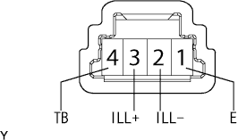

Hazard Warning Signal Switch Assembly Inspection |
| 1. Inspect Hazard Warning Signal Switch Assembly |
 |
Resistance Measurement
Using SST (Toyota electrical tester), measure the resistance between the terminals.
| Tester Connection (Terminal Symbol) | Condition | Standard |
|---|---|---|
| 4(TB) - 1(E) | Switch ON | Below 1 Ω |
| Switch OFF | 10 kΩ or higher |
LED Illumination Inspection
Check the illumination condition of the LED when battery voltage is applied to the connector terminals.
| Battery connection | Specified Condition |
|---|---|
| Battery positive (+) → 3 (ILL+) Battery negative (-) → 2 (ILL-) | Comes on |